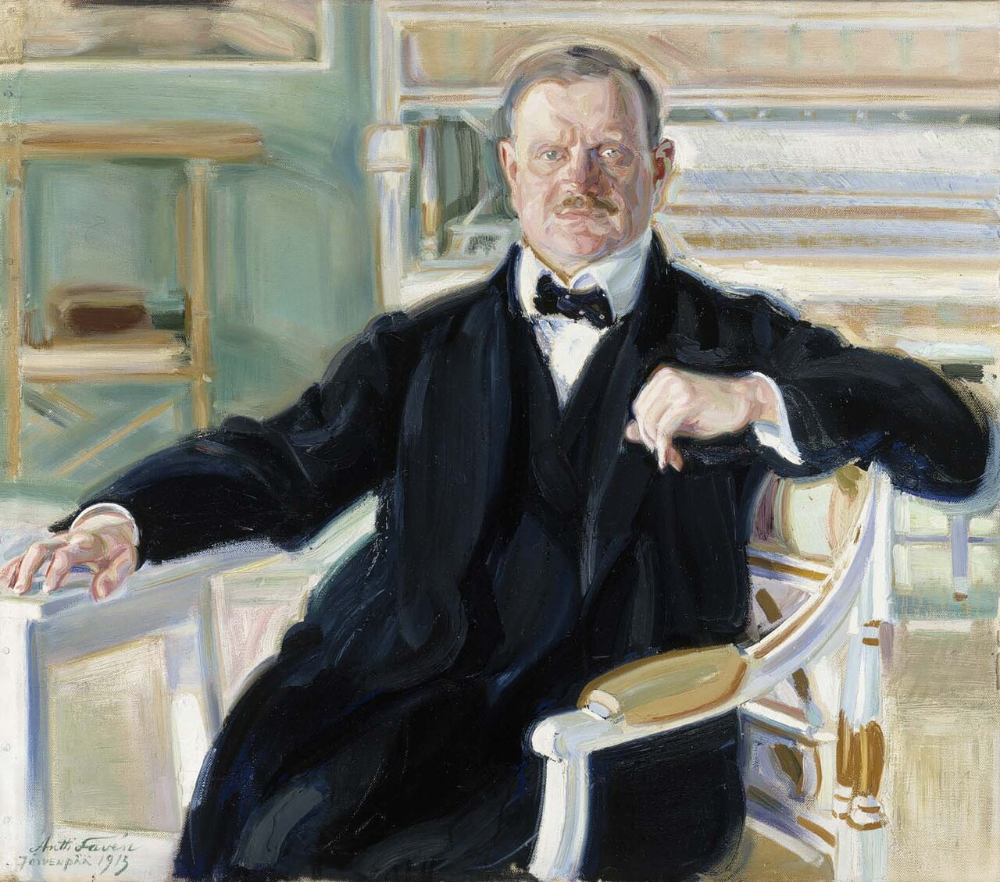
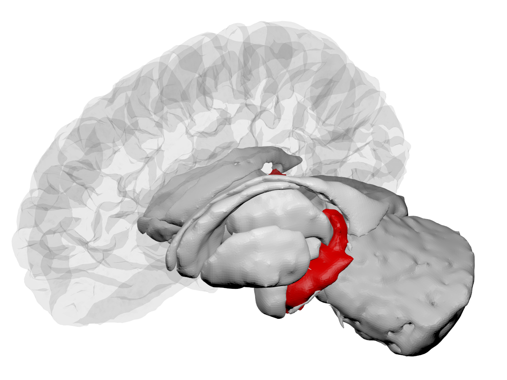
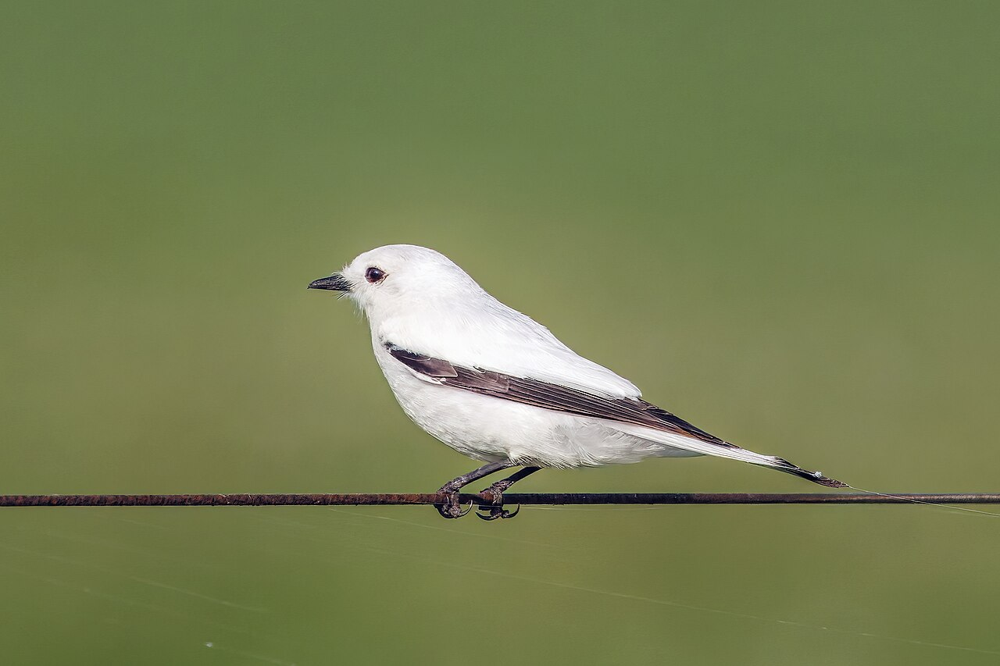

Lula.
diario de la mañana — el mundo, tu ciudad y lo que te asombra

Buen día, viernes. Día cálido y pesado: de 20° a 28 o 29°, sin lluvia en la Ciudad —las tormentas llegan el sábado a la madrugada—. Ayer salió la inflación de octubre y el número sorprendió para arriba: 2,2 %. Te lo desarmo abajo, porque adentro hay dos cosas que van en direcciones opuestas. Y la ciencia de hoy es de las que parecen ciencia ficción: tres pacientes con epilepsia refractaria a los que les instalaron, con un virus, un interruptor químico en el hipocampo.
- El mundo en cinco minutos3'
- Argentina: la inflación de octubre2'
- Ciencia: un interruptor en el hipocampo7'
- Mirá a tu alrededor2'
- Receta de estación2'
- La palabra del día1'
- Le français du matin2'
- English corner3'
- Viernes de música: Sibelius4'
- Hoy en la historia · un lugar2'
- Lo que me asombra hoy1'
- Pasatiempo: sudoku medio12'
- Cuaderno: repaso, quiz y escritura4'
Los 27 se juntan en Dublín a hablar de inteligencia artificial
Los jefes de Estado y de Gobierno de la Unión Europea tienen hoy una reunión informal en Dublín. Dos temas: el impacto de la inteligencia artificial en la competitividad europea y una posición común frente a una eventual paz en Ucrania. «Informal» quiere decir que no se vota nada, y eso no es un detalle menor: son las reuniones donde se arma el consenso que después se formaliza.
Por qué importa: Europa viene discutiendo un diagnóstico incómodo: regula mejor que nadie y produce mucho menos. Y para una bióloga importa más de lo que parece: buena parte de la investigación biomédica europea depende de poder entrenar modelos con datos de salud, que es justo donde la regla aprieta.
Gaza, Sudán, Irán
Un ataque aéreo israelí contra un hospital en Gaza dejó muertos y condenas internacionales. En Sudán, Amnistía Internacional denunció una masacre con más de 200 muertos, ocurrida pese a la presencia de fuerzas de paz de la ONU. Y el OIEA sigue sin saber dónde está el uranio enriquecido iraní y reclama más cooperación, mientras Teherán exige el fin de lo que llama «demandas excesivas» de Washington.
Por qué importa: los tres son la misma pregunta con tres caras: qué sirve de algo cuando un Estado decide ignorar una norma internacional. Un hospital está protegido por el derecho humanitario, una misión de paz está desplegada para evitar exactamente lo que pasó, y un régimen de inspecciones solo funciona si el inspeccionado deja entrar. El sistema no se rompe de golpe: se desgasta caso por caso.
Y además: Lula da Silva llegó a Manila para la cumbre de la ASEAN · Pakistán anunció la muerte de 74 insurgentes y acusó a India de financiarlos · el papa León XIV recorre hoy Chiclayo, la ciudad peruana donde fue obispo · Eurostat publica hoy la segunda estimación del PBI europeo del tercer trimestre.
La inflación de octubre dio 2,2 %: la más alta desde abril
Salió ayer a las 16 y rompió el rango: las consultoras esperaban entre 1,7 % y 2,1 %, el REM del Banco Central decía 1,8 %, y el INDEC informó 2,2 % mensual. Interanual: 33,1 %, apenas por debajo del 33,4 % de septiembre. Acumulado del año: 26,3 %.
Lo interesante está adentro, y va para los dos lados. El IPC núcleo —el que saca estacionales y regulados, el que marca la tendencia de fondo— dio 1,5 %, el valor más bajo en quince meses. Lo que empujó el índice vino de afuera del núcleo: regulados 2,9 % y estacionales 5,5 %, con servicios públicos al tope, 4,2 %, por el aumento de las tarifas de gas. O sea: el número de titular subió por precios que fija el Estado y por verduras, no porque la economía esté recalentada. Las dos lecturas son verdaderas a la vez, y por eso cada uno va a citar la que le conviene.
El ejercicio de ayer: te había dejado tres cosas para mirar —el núcleo, la interanual y si el dato caía dentro del rango esperado—. Salieron las tres: núcleo en mínimo, interanual bajando lento y sorpresa para arriba. Un dato que rompe el rango es el que mueve precios de activos, aunque la historia de fondo no haya cambiado.
Para hacer en la ciudad
- La Noche de los Museos es mañana, sábado 14, de 19 a 2. Tres lugares cercanos entre sí y nada más.
- Filarmónica de Buenos Aires en el Colón, el 21 a las 20 y el 22 a las 17: Walton y Sibelius. Y el 21 a las 11 hay ensayo general abierto y gratuito por «Barrios al Colón».
- Ciclo John Huston en la Sala Lugones, hasta el 4 de diciembre.
Un interruptor químico en el hipocampo, y una pastilla que lo apaga
De qué estamos hablando: de la epilepsia del lóbulo temporal medial refractaria, que es el caso que peor sale hoy: crisis que nacen en el hipocampo —la estructura del lóbulo temporal donde se forman las memorias— y que no responden a ninguna combinación de fármacos. La alternativa clásica es la cirugía: sacar el foco. Funciona, pero es irreversible y el hipocampo que se extirpa hacía algo. La idea de este trabajo es reemplazar el bisturí por un interruptor.

Quién es quién
- Quimiogenética: instalar en una célula un receptor diseñado que no responde a nada del cuerpo pero sí a una droga concreta, de modo que la droga solo actúe donde vos pusiste el receptor. La familia clásica son los DREADD: receptores acoplados a proteína G, mutados para ignorar su ligando natural.
- El receptor inhibitorio: el que se usa acá está acoplado a Gi, la proteína G que baja el AMP cíclico y abre canales de potasio. Resultado: la neurona se hiperpolariza y se vuelve más difícil de disparar. No se apaga: se le sube el umbral.
- El vector: un virus adenoasociado (AAV) inyectado en el hipocampo, que entrega el gen del receptor a las neuronas de la zona. El AAV no se integra: queda como episoma, y por eso el efecto puede durar años en células que no se dividen.
- La llave: clozapina en dosis bajas, un antipsicótico viejo y conocido, que acá se usa como simple ligando del receptor diseñado. Es lo que convierte el experimento en algo clínicamente viable: ya está aprobada y se sabe dosificar.
Qué hicieron y qué dio
- Tres pacientes varones, de 28 a 37 años, con epilepsia del lóbulo temporal medial refractaria y esclerosis hipocampal.
- Reducción media de la frecuencia de crisis del 92,6 %. Por paciente: de 4,5 crisis por mes a 0,5; de 4 a 0; y de 4,5 a 0,5. Seguimiento de 8 a 12 meses.
- Eventos adversos grado 1 o 2, es decir leves o moderados.
- El detalle más elegante del trabajo: el tercer paciente tuvo dos crisis cuando se interrumpió la clozapina sin querer, y volvió a cero al retomarla. Eso es, de hecho, un control intrasujeto: el efecto depende de la droga, no del pinchazo ni de la expectativa.
- Lo firman investigadores del Chinese Institute for Brain Research, el Hospital Xuanwu de Pekín y la empresa GenAns, con el neurocirujano Guoguang Zhao al frente de la parte clínica.
Lectura crítica
- Son tres pacientes, sin control y sin ciego. Es una prueba de concepto y los autores lo dicen. En epilepsia el efecto placebo es grande y el registro de crisis lo hace el propio paciente: una serie abierta de tres casos no alcanza para más que seguir.
- Depende de tomar la pastilla todos los días. Un tratamiento reversible es una ventaja enorme sobre la cirugía, pero convierte la adherencia en parte del dispositivo: si se corta la clozapina, vuelven las crisis —lo vimos—. Y la clozapina no es inocua: el fármaco original tiene agranulocitosis entre sus efectos conocidos, aunque acá se use en dosis mucho menores.
- Lo que falta: cuánto dura la expresión del transgén, si aparece respuesta inmune contra la cápside del AAV o contra el receptor —que es una proteína extraña para el sistema inmune—, y qué pasa con la memoria al inhibir crónicamente un hipocampo.
La conexión con lo que estudiás
El diseño tiene una elegancia que conviene registrar. El problema de cualquier droga es la especificidad: actúa donde hay receptor, y el receptor está en todo el cuerpo. La quimiogenética invierte el problema —en vez de buscar una droga más selectiva, hacen selectiva a la célula, poniéndole un receptor que nadie más tiene—. La especificidad ya no está en la molécula sino en la geografía del vector. Es el mismo principio de las CAR-T: no un veneno mejor, un linfocito con dirección nueva. Y la contracara es la misma: todo depende de dónde llegó el vector.
«Chemogenetic Neuromodulation for Refractory Epilepsy». Carta de investigación en el New England Journal of Medicine, noviembre de 2026, NEJMc2606815 · la cobertura de Science. Las fuentes no coinciden en la fecha exacta de publicación; los números vienen del resumen y de la cobertura.
Biotec en el mundo real · FLENI
Si el tema es neurología de alta complejidad, en la Argentina el nombre es FLENI: una fundación sin fines de lucro, con sedes en Belgrano y en Escobar, que combina asistencia, rehabilitación e investigación en enfermedades neurológicas.
- Qué la hace distinta: tiene programas de epilepsia y de cirugía de la epilepsia, que es exactamente el campo del trabajo de hoy, con monitoreo video-EEG prolongado para localizar el foco antes de operar.
- Investigación: participa en ensayos clínicos internacionales en esclerosis múltiple, Parkinson y Alzheimer, y tiene convenios con el CONICET.
- Salida laboral: coordinación de ensayos clínicos, monitoreo de datos, neurociencia básica, bioinformática de imágenes. Si la terapia génica neurológica se vuelve rutina, los centros que ya saben reclutar y seguir pacientes son los que la van a aplicar.
Ciencia en la vida cotidiana · Qué está midiendo un electroencefalograma
No mide «la actividad del cerebro» en general: mide, desde el cuero cabelludo, la suma de los potenciales postsinápticos de millones de neuronas piramidales de la corteza, que están alineadas en paralelo y perpendiculares a la superficie. Esa geometría es la clave: solo las corrientes que apuntan en la misma dirección se suman en vez de cancelarse. Por eso el EEG ve bien la corteza y casi no ve estructuras profundas como el hipocampo, y por eso, para localizar un foco temporal, a veces hay que meter electrodos adentro.
La catalpa, que abre ahora, y la monjita blanca
.jpg){kind=link}

_Colonia.jpg){kind=link}
El árbol: catalpa
| Nombre científico | Catalpa bignonioides (Bignoniáceas, la familia del jacarandá y del lapacho). Viene del sudeste de Estados Unidos; el nombre es de la lengua creek. |
|---|---|
| Cómo reconocerla | Hoja enorme, acorazonada, de hasta 25 cm, que al estrujarla huele feo. Ahora está en flor: panojas de campanitas blancas con manchas amarillas y violetas adentro. Y después quedan los frutos, que la delatan todo el invierno: vainas colgantes larguísimas, de 30 o 40 cm, finitas como un lápiz. |
| Lo asombroso | Tiene nectarios extraflorales: glándulas en la base de la hoja que segregan néctar fuera de la flor, donde no sirven para polinizar nada. ¿Para qué? Para contratar guardaespaldas: el néctar atrae hormigas, que dan vueltas por la hoja y atacan a las orugas. Es una defensa indirecta —el árbol no fabrica veneno, terceriza—. |
El ave: monjita blanca
| Nombre científico | Xolmis irupero (Tiránidos, otra vez la familia del benteveo). Chiquita, de un blanco purísimo, con las puntas de las alas y de la cola negras. Imposible confundirla. |
|---|---|
| Cómo reconocerla | Por el contraste, y porque se queda muy quieta en un poste o un alambrado, a la vista, en campo abierto. No la busques en el centro: es de pastizal, borde de ruta y quintas, saliendo de la ciudad. |
| Lo asombroso | No construye nido: usa hornos de hornero abandonados. El nombre científico lo dice —irupero viene del guaraní irupé— y el común también: «monjita», por el hábito blanco y negro. Es el tercer eslabón de una cadena que ya vimos: el hornero construye, y después el horno pasa de mano en mano durante años entre especies que no saben hacer uno. |
Misión de la semana
Focaccia, para el fin de semana
Diez minutos de trabajo y mucha espera. La espera es la receta.
Ingredientes
- 500 g de harina 000
- 400 ml de agua (sí, 80 %: la masa va pegajosa)
- 10 g de sal, 3 g de levadura seca
- Aceite de oliva, sal gruesa, romero
Pasos
- Mezclá harina, agua y levadura con una cuchara. Sin amasar. Dejá 30 minutos.
- Sumá la sal y hacé cuatro «pliegues»: estirás un borde y lo doblás al centro, girando el bol.
- Tapá y a la heladera, 12 a 24 horas.
- Volcá en asadera bien aceitada, estirá con los dedos, dejá 2 horas a temperatura ambiente.
- Hundí los dedos, aceite, sal gruesa, romero. Horno fuerte (240°) 20 minutos.
La química de la receta
Por qué no hace falta amasar: amasar sirve para alinear y entrecruzar glutenina y gliadina en la red de gluten. Pero con 80 % de hidratación las proteínas tienen movilidad suficiente para hacerlo solas, por difusión, si les das tiempo. Es la autólisis: el trabajo mecánico se reemplaza por trabajo térmico y tiempo. Los pliegues solo orientan la red y atrapan gas.
Por qué la heladera: a 4 °C la levadura casi no fermenta, pero las proteasas y las amilasas de la harina siguen trabajando. Las amilasas van cortando el almidón en maltosa y glucosa: alimento de la levadura después, y sustrato de la reacción de Maillard en el horno. Por eso una masa de heladera sale más sabrosa y más dorada que una del mismo día: no es la levadura, es el azúcar que se liberó mientras dormía.
epilepsia sustantivo
griego epí (sobre) + lambánein (tomar, agarrar) → epilēpsía (ser agarrado desde arriba) → castellano epilepsia · francés épilepsie · inglés epilepsy
El nombre guarda una teoría médica entera: quien convulsionaba había sido agarrado por algo externo —un dios, un demonio—. En Grecia se la llamaba directamente «la enfermedad sagrada». Lo asombroso es que la refutación es igual de antigua: en el tratado hipocrático Sobre la enfermedad sagrada, del siglo V a.C., alguien escribe que no es más divina que cualquier otra enfermedad, que tiene causa natural y que está en el cerebro. Veinticinco siglos antes del EEG.
La raíz lambánein dejó parientes: «sílaba» (lo que se toma junto) y «dilema» (dos cosas tomadas). Y el prejuicio duró tanto como la palabra: recién en el siglo XX la epilepsia dejó de ser, en muchos países, causal legal de internación forzosa o de impedimento para casarse.
J'ai un frère
— Tu as des frères et sœurs ?
— Oui, j'ai un frère et une sœur.
— Et tes parents ?
— Ils habitent à Buenos Aires.
| un frère / une sœur | un hermano / una hermana [an FRER / ün SÖR] |
|---|---|
| mes parents | mis padres [me pa-RÁN] |
| ils habitent | viven [il-za-BÍT] |
| je suis fille unique | soy hija única [she suí fiy ü-NÍK] |
Un truco
Ojo con parents: son los padres, no los parientes. Los parientes son la famille o les proches. Es un falso amigo clásico y se nota enseguida. Y fijate en ils habitent: la s de ils se pronuncia y se pega a la vocal siguiente —il-za-bit—. Eso es la liaison, y es lo que hace que el francés hablado suene como una sola palabra larga.
Regulating what you do not build
European leaders meeting in Dublin will spend much of the day on a question they have been circling for years: why the continent that writes the world's most careful rules on artificial intelligence builds so little of it. The usual explanations — fragmented capital markets, a shortage of patient investors, twenty-seven versions of everything — are by now well rehearsed, and none of them is wrong.
The more awkward possibility is that the rule-writing and the building are not independent. Compliance is a fixed cost, and fixed costs fall hardest on the small, which is to say on precisely the firms a continent needs if it is ever to grow its own. A regime that a large American company absorbs with a legal department can be the thing that sinks a start-up in Tallinn.
None of which settles the argument, because the rules exist for reasons that have not gone away. The honest framing is a trade, not a mistake: Europe has chosen to buy a degree of protection at a price it is only now getting around to calculating.
- to circle a question — dar vueltas alrededor de un tema
- well rehearsed — muy repetido, sabido de memoria
- awkward — incómodo
- to fall hardest on — golpear más fuerte a
- which is to say — es decir
- to absorb a cost — bancarse un costo
- to sink — hundir
- to get around to — llegar por fin a hacer algo
Sibelius y el cisne que nada en el río de los muertos
Jean Sibelius tenía veintiocho años y Finlandia todavía era parte del imperio ruso cuando compuso la Suite Lemminkäinen, op. 22 (1893-95): cuatro poemas sinfónicos sobre el Kalevala, la epopeya nacional que un médico rural, Elias Lönnrot, había armado recopilando canciones campesinas. Sibelius hizo con esa materia lo que Bartók haría con la música húngara: no la citó, la respiró.
| 1. Lemminkäinen y las doncellas de la isla | El héroe, que es un seductor insoportable, naufraga en una isla llena de mujeres. Música rápida, luminosa, de cuerdas en movimiento perpetuo. |
|---|---|
| 2. El cisne de Tuonela | Si escuchás una sola cosa, que sea esta. Ocho minutos. Un corno inglés solo —el oboe grave, de sonido nasal y triste— hace el canto del cisne que nada en el río que rodea Tuonela, el reino de los muertos. Debajo, cuerdas con sordina que no se mueven casi nada. Es una de las páginas más desoladas del repertorio. |
| 3. Lemminkäinen en Tuonela | El héroe intenta cazar al cisne, lo matan y lo descuartizan. La música se vuelve oscura y espesa. |
| 4. El regreso de Lemminkäinen | La madre junta los pedazos del hijo en el río y lo revive. Final de galope, brillante, con la orquesta entera. |
Mirá lo que hace el orden: la pieza más famosa y más quieta está en el segundo lugar, no al final. Sibelius puso el centro emocional adentro, no en el aplauso.
Dónde escucharla acá: la Filarmónica de Buenos Aires la toca en el Colón el sábado 21 a las 20 y el domingo 22 a las 17, con Elias Grandy dirigiendo y Frank Peter Zimmermann como solista en el Concierto para violín de Walton. El programa se llama «Romanticismo tardío». Y el 21 a las 11 hay ensayo general abierto y gratuito.
13 de noviembre de 1985: Armero
Poco después de las nueve de la noche, el volcán Nevado del Ruiz, en Colombia, tuvo una erupción apenas moderada. Lo que la volvió catastrófica fue el hielo: el calor derritió parte del glaciar de la cima y el agua, con ceniza y escombros, bajó por los cauces como lahar —un flujo de lodo con la densidad del cemento húmedo— a hasta 50 km/h. Llegó a Armero a las 11 y borró el pueblo: más de 23.000 muertos, según la cifra más conservadora.
Lo peor es que estaba avisado. Había mapas de riesgo hechos meses antes que marcaban exactamente el recorrido del lahar, y no se evacuó.
El lugar: el valle del Lagunilla
| Dónde | En la cordillera Central colombiana, entre Tolima y Caldas, a unos 50 km del volcán. Armero estaba construido sobre depósitos de lahares anteriores: el valle ya había sido arrasado en 1595 y en 1845. |
|---|---|
| Lo que dejó | Es la segunda erupción más mortal del siglo XX, después del Mont Pelée de 1902, y cambió la vulcanología: desde Armero, los mapas de peligro y los protocolos de evacuación se volvieron parte central de la disciplina. El pueblo no se reconstruyó; el terreno es hoy un camposanto. |
El capítulo de Pokémon que mandó cientos de chicos al hospital
El 16 de diciembre de 1997, la televisión japonesa emitió el episodio 38 de Pokémon, «Dennō Senshi Porygon». En un momento hay una explosión representada con luces rojas y azules alternadas a unos 12 destellos por segundo, a pantalla completa. Las ambulancias trasladaron esa noche a unos 685 chicos —la cifra exacta varía según la fuente, entre «más de 600» y casi 700—, y más de 150 quedaron internados. La serie estuvo cuatro meses fuera del aire.
El mecanismo es la epilepsia fotosensible, que afecta a una fracción chica de las personas con epilepsia y a algunas que nunca habían tenido una crisis. La frecuencia crítica está entre 15 y 25 Hz: a esa velocidad, el estímulo luminoso entra por la vía visual y sincroniza a poblaciones enteras de neuronas corticales que normalmente disparan desordenadas. Una crisis es, en el fondo, eso: sincronía donde debería haber ruido. El contraste rojo-azul es especialmente provocador porque activa de manera alternada canales de color distintos.
Lo que vino después es la parte buena: de ahí salieron las primeras normas sobre destellos en televisión, que hoy están en las guías de broadcasting de medio mundo y en las advertencias de los videojuegos. Es uno de los pocos casos donde se traza una línea recta entre un accidente y la regla que evita el siguiente.
El del viernes
Repaso y quiz de la mañana
Repaso de idiomas
Quiz
Un receptor quimiogenético tipo DREADD es…
El receptor inhibitorio usado acá está acoplado a Gi, así que…
¿Cuál fue el control involuntario más convincente del trabajo?
El IPC núcleo de octubre dio 1,5 %, el más bajo en 15 meses. Eso significa que…
Los nectarios extraflorales de la catalpa sirven para…
Una masa que pasa la noche en la heladera sale más sabrosa porque…
Escritura
- Quiz: un receptor diseñado · hiperpolariza · la interrupción accidental de la clozapina · regulados y estacionales · hormigas guardaespaldas · las amilasas y el Maillard.
- Repaso: j'ai beaucoup de travail · je rentre à la maison · j'ai un frère · salir de garante de · quisquilloso o exigente · quedar en tierra de nadie.
- Francés: por ejemplo, «J'ai un frère et une sœur. Mes parents habitent à Buenos Aires.»
Sudoku:
Fuentes de esta edición
- Mundo: agenda de agencias del día
- Inflación: Chequeado: el dato y su desagregado · INDEC
- Clima: La Nación, con datos del SMN
- Ciencia: NEJM: neuromodulación quimiogenética en epilepsia refractaria · Science · FLENI
- Música e historia: Teatro Colón: «Romanticismo tardío» · Earth Magazine: Nevado del Ruiz, 1985 · el episodio de 1997
Mañana, sábado: ballet, y una edición más tranquila. — Lula.